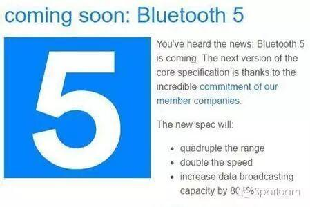
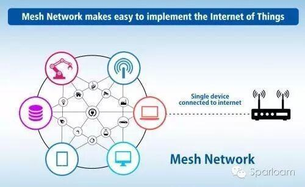
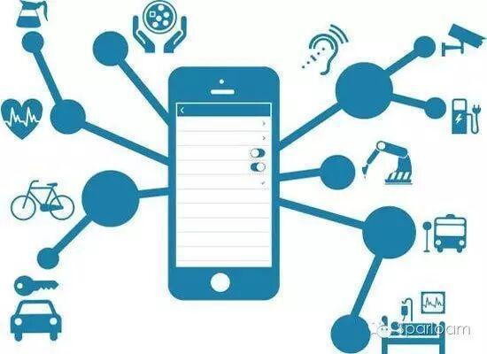

更快更强的蓝牙5.0
全新的蓝牙5.0标准

其实蓝牙5的发布对于我们的影响绝不亚于5G标准的发布，因为在我们的日常生活中，蓝牙技术已经无处不在，手机、耳机、智能手表、智能手环、智能台灯、智能电饭煲等等太多太多的智能硬件设备其实都是采用蓝牙传技术传输。
蓝牙技术的前世今生
过去20年间，蓝牙技术在标准上先后推出了10个版本，其技术和功能逐渐完善。
蓝牙1.0：获得当年COMDEX“最佳展示技术奖”，随后第一款基于蓝牙技术的打印机、笔记本电脑、免提车载套件等产品相继问世。
蓝牙1.1：传输率约在每秒748到810千字节(kb/s)，因是早期设计，容易受到同频率之产品干扰而影响通讯质量。
蓝牙1.2：可谓蓝牙技术的里程碑，从这一代蓝牙技术开始，蓝牙通信在传输速度、抗干扰、安全性等方面都有很大的提高。
蓝牙2.0：蓝牙1.2的改良提升版，传输率约在每秒1.8兆到2.1兆，开始支持双工模式，即在进行语音通讯的同时，亦可传输档案和高质量图片。
蓝牙2.1：这一版本最大的改进，是将需持续传输数据流设备的扫描间隔从0.1秒扩大到0.5秒，因此功耗更低、启动更快。
蓝牙3.0：2009年4月颁布，蓝牙3.0采用了一种全新的交替射频技术，传输速度是蓝牙2.0的8倍，可轻松用于录像机至高清电视、PC至PMP、UMPC至打印机之间的资料传输。
蓝牙4.0：假如之前的蓝牙技术是普通的“功能手机”，那么蓝牙4.0则开启了“智能手机”时代。蓝牙4.0是蓝牙从诞生至今唯一的一个综合协议规范，提出了“低功耗蓝牙”“传统蓝牙”和“高速蓝牙”三种模式。高速蓝牙主攻数据交换与传输;传统蓝牙则以信息沟通、设备连接为重点;低功耗蓝牙顾名思义，以不需占用太多带宽的设备连接为主。这三种协议规范还能互相组合搭配，从而实现更广泛的应用模式。此时，蓝牙4.0已经把传输距离提升到100米以上。
蓝牙4.1：2013年12月发布，蓝牙4.1速度更快且更智能化，不仅减少了设备之间重新连接的时间，支持断点续传，传输效率也有很大改进，如用户连接了多部可穿戴设备，彼此间的信息都能即时发送到接收设备上。
蓝牙4.2：2014年12月颁布，改善了数据传输速度和隐私保护程度，设备可直接通过IPv6和6LoWPAN接入互联网。在新的标准下，蓝牙信号想要连接或者追踪用户设备必须经过用户许可，并且速度更快，两部蓝牙设备之间的数据传输速度提高了2.5倍。
蓝牙5：预计于2016年末至2017年初发布，其低功耗连接距离与速度将各自提升4倍和2倍，而无连接式的广播数据传输量将提升8倍。
蓝牙5.0的7大主要特点介绍：
1、更快的传输速度
蓝牙5.0的开发人员称，新版本的蓝牙传输速度上限为2Mbps，是之前4.2LE版本的两倍。当然，你在实际生活中是不太可能达到这个极限速度的，但是仍然可以体验到显著的速度提升。
2、更远的有效距离
蓝牙5.0的另外一个重要改进是，它的有效距离是上一版本的4倍，因此在理论上，当你拿着手机站在距离蓝牙音箱300米的地方，它还是会继续放着你爱的歌。 也就是说，理论上，蓝牙发射和接收设备之间的有效工作距离可达300米。当然，实际的有效距离还取决于你使用的电子设备。
3、导航功能
此外，蓝牙5.0将添加更多的导航功能，因此该技术可以作为室内导航信标或类似定位设备使用，结合wifi可以实现精度小于1米的室内定位。举个例子，如果你和小编一样是路痴的话，你可以使用蓝牙技术，在诺大的商业中心找到路。
4、物联网功能
物联网还在持续火爆，因此，蓝牙5.0针对物联网进行了很多底层优化，力求以更低的功耗和更高的性能为智能家居服务。
5、升级硬件
此前的一些蓝牙版本更新只要求升级软件，但蓝牙5.0很可能要求升级到新的芯片。不过，旧的硬件仍可以兼容蓝牙5.0，你就无法享用其新的性能了。搭载蓝牙5.0芯片的旗舰级手机将于2017年问世，相信中低端手机也将陆陆续续内置蓝牙5芯片。苹果将为成为第一批使用该项技术的厂商之一。
6、更多的传输功能
全新的蓝牙5.0能够增加更多的数据传输功能，硬件厂商可以通过蓝牙5.0创建更复杂的连接系统，比如Beacon或位置服务。因此通过蓝牙设备发送的广告数据可以发送少量信息到目标设备中，甚至无需配对。
7、更低的功耗
众所周知，蓝牙是智能手机的必备功能，随着智能设备和移动支付等越来越多需要打开蓝牙，才能享受便利功能逐渐融入人们的生活之中，蓝牙的功耗成为了智能手机 待机时间的一大杀手。为此蓝牙5.0将大大降低了蓝牙的功耗，使人们在使用蓝牙的过程中再也不必担心待机时间短的问题。


如何影响智能家居发展
移动通信技术的发展不断地给智能家居行业提供强而有力的技术支持，包括5G技术、蓝牙5、下一代wifi标准等都有明确的商业化时间表，智能家居的技术瓶颈已经慢慢地被突破。
大家都知道主流的智能家居传输技术当中并没有蓝牙，这是因为它自身特性决定的，而自从上一个版本的蓝牙，已经拥有了一些专注物联网的功能，而蓝牙5则将这些功能放在了中心位置。这样一来，智能家居传输技术争斗将进入白热化，更远的作用距离肯定能够提高其在智能家居当中的运用，而更强的传递容量意味着它能够一些复杂的智能家居指令，这将进一步提高他的竞争力。
一方面随着室内定位越来越近，蓝牙5.0还支持室内定位导航功能，可以作为室内导航信标或类似定位设备使用，结合wifi可以实现精度小于1米的室内定位。
蓝牙5能够传输的数据也将更丰富、更智能，它将加入定位和导航功能，这样一来你就不需要安装应用，也不需要建立连接就可以收到蓝牙信标所发送的指定位置信息了，这样一来，室内定位在不久的将来就能实现。
一直以来，室内定位都是一个世界难题，因为说室内的环境动态性很强可以说是多种多样，不同的大厦会有不同的室内布局;室内的环境更加精细，由此也需要更高的精度来分辨不同的特征，现有技术都不能很好的解决。因此也分成了很多技术流派，他们的目标只有一个，都只是为了解决室内定位问题，足以证明室内定位的困难程度。
蓝牙5.0针对物联网进行了很多底层优化，力求以更低的功耗和更高的性能为智能家居服务。一旦能实现精准的室内定位，智能家居就像如鱼得水一样获得了强大的技术支撑，直接间接地衍生出多种多样的智能家居新功能，因为你的设备能通过蓝牙获知到主人的室内位置，这必定会催生很多智能家居的新玩法。比如，当您从卧室走到客厅的时候，您卧室的灯自动闭关，客厅电视、影音设备、窗帘、背景音乐自动进入待机状态，只待你一声令下，他们就可以迅速切换至娱乐影音模式场景。
另一方面，蓝牙5.0将把通信距离提高至原来的四倍，这将使得它抢夺Wi-Fi在智能家居市场的份额。
在可穿戴领域，蓝牙已经是应用最广泛技术标准。蓝牙技术功耗低、传输速度较快，因此在消费物联网领域大获成功，但如果将目光放到整个物联网市场，工程师仍然存在很多选择，还没有人能预测哪种技术标准能够在这个不断发展变化的市场一统天下。
所以现在很多产品不得不支持多种连接标准，以适应更多的应用环境，例如大卖的Nest智能调温器就支持三种方式通信：Wi-Fi、Zigbee和蓝牙。
蓝牙5.0将把通信距离提高至原来的四倍。这意味着BLE技术终于可用在智能家居里面了，用户可以通过BLE来控制家里的智能产品，从智能灯泡到智能锁，现在一家之中的智能设备都可以用BLE来连接。相比耗电量巨大的WiFi技术，BLE用于智能家居产品的优势非常明显。
增长通信距离对于BLE的其他应用也是好消息，不管是蓝牙键鼠还是可穿戴，都可以让用户不再担心由于距离变远而掉线，这一点对于蓝牙耳机尤其重要。
最后值得一提的是，蓝牙5的横空出世很有可能改变家用电器传输格局。
以前蓝牙技术在传输距离、穿透性、稳定性、能耗方面的弱点都已经解决，相信普及蓝牙传输会是未来的一大趋势。
目前绝大多数的普通家用电器仍然采用红外传输，最常见的就是家里各种各样的遥控器，空调的、电视的、安防摄影等等无一不是采用红外传输。它早早就走进千家万户，但由于人们对于智能生活要求的不断提高，红外技术已经不能满足人们的使用需求，它对传输距离、传输角度都有很大的限制。更糟的是，他的抗干扰性比较差，传输稳定性不好，使用体验一般。
总结：
蓝牙技术联盟执行总监Mark Powell表示：“目前全球已有多达82亿个蓝牙产品正在被使用中，而Bluetooth 5的性能提升与未来蓝牙的发展规划让我们有理由相信，到2020年，超过三分之一的物联网设备都将采用蓝牙技术。蓝牙的驱动力和的创新能力将确保它是所有开发者在创建物联网解决方案时的最佳选择。”
调研机构ABI Research首席分析师Patric Connolly介绍，至2020年，基于蓝牙的Beacon出货量预计将超过3.71亿。凭借广播数据传输量八倍的提升，Bluetooth 5将进一步推进Beacon和定位服务在智能家居、商业和工业市场中的应用和部署。